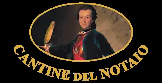
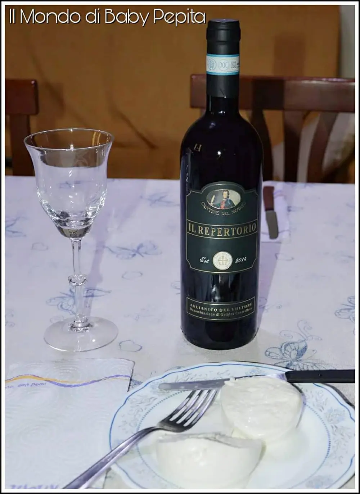
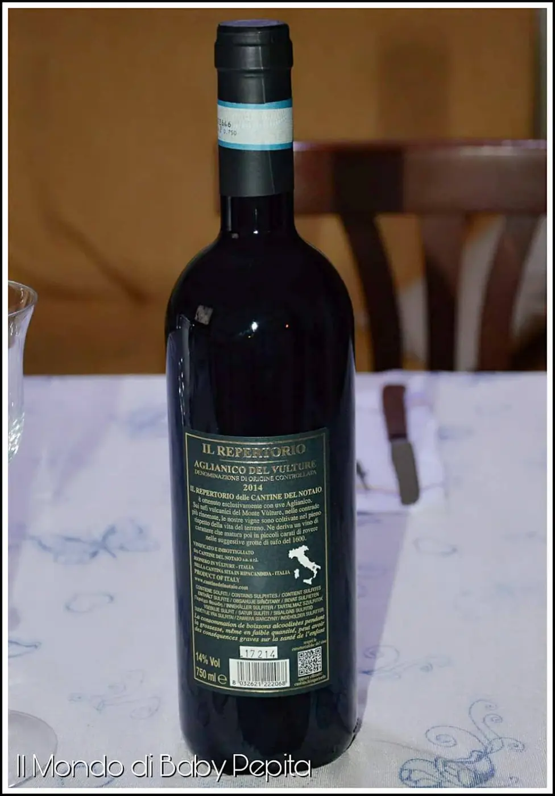
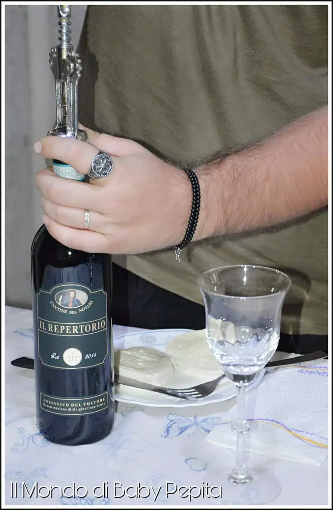
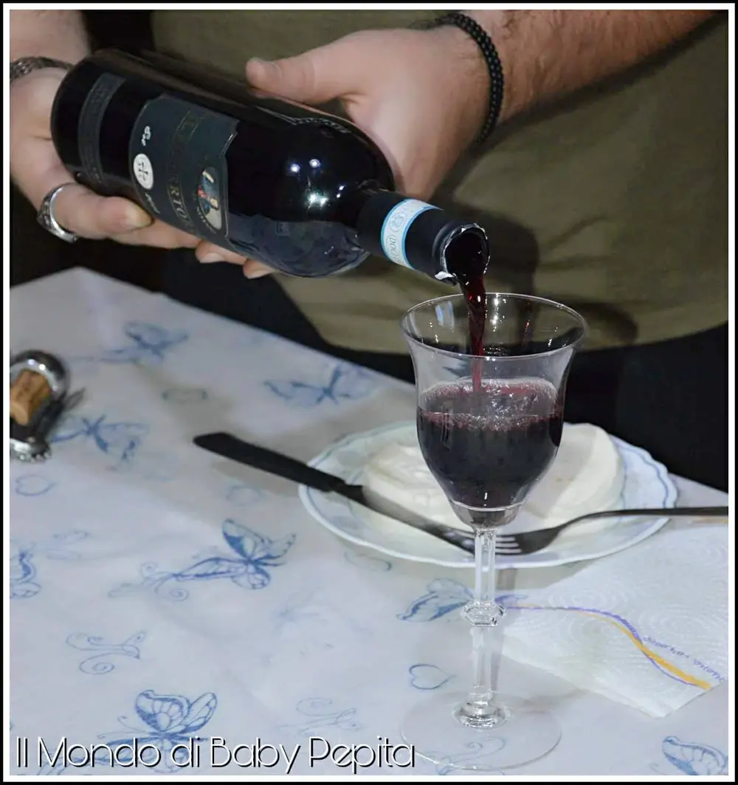
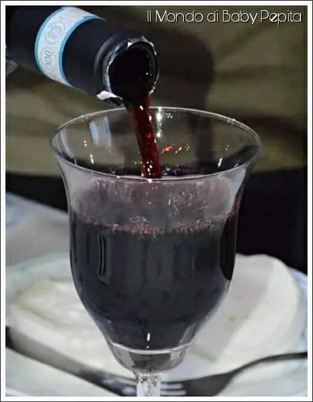

Vino rosso:Cantine del Notaio - "Il Repertorio"

"Un pasto senza vino è come un giorno senza sale".
- Johann Wolfgang Von Goethe
Vino rosso: Così diceva van Goethe e noi confermiamo questa affermazione. Se solo si pensa ad un tavolo composto da amici o un tavolo a lume di candela, quindi in un momento magico; c'è sempre una bottiglia di vino ad ornarla.
Il vino è un modo di qualità di bere in compagnia, ed è soprattutto di compagnia se bevuto con giusti limiti.
Io oggi nel mio blog ho il piacere di ospitare un vino D.O.C. da colore rosso, delle CANTINE DEL NOTAIO "il repertorio".

È un vino rosso color ciliegia molto luminoso. Ha un profumo che ricorda la prugna, con retrogusto di liquirizia e spezie. Tuttavia non si presenta come un gusto forte anzi, è bel aromatizzata che lascia in bocca un sapore speziato.
Sapore: Molto gradevole.
Un vino adatto ad un pranzo completo; quindi ottimo per primi piatti di sughi o secondi di carne rossa.

Classificazione: aglianico del Vulture DOC
Gradazione alcolica: 14% vol.
Zona di produzione: Rionero in Vulture (Basilicata).
Uve: 100% Aglianico del Vulture
Contenuto della bottiglia: 75,0 cl
Temperatura di servizio: 18°C. (Da servire in calici ampi).
Periodo di vendemmia: seconda, ottobre
Macerazione: circa 15 giorni con controllo in acciaio inox Invecchiamento: in barriques di rovere francese di secondo e terzo passaggio per 12 mesi, in grotte naturali di tufo vulcanico.
Affinamento in bottiglia: 4 mesi.
Anno: 2014

Opinione modesta e personale:

Non me ne intendo di vino pregiato, posso però dare un parere personale in quanto bevo sempre un bicchiere di vino a tavola.
Non sarò un intenditrice ma sono una persona che ha assaggiato questo buon vino.
Mi è piaciuto molto il sapore quasi fruttato con un gusto finale più duro, che lascia la bocca di buon sapore.
L'ho bevuto sia a temperature ambiente che fresco di frigorifero.
Devo dire che l'ho apprezzato più a temperature ambiente perché si sente tutto il gusto fino in fondo.

Premi:
- Premiato con '90 punti' da vinitaly 2017 per la guida '5 star wines the Book - 2017
- Premiato con 'medaglia d'argento' al concours mondial de Bruxelles - 2017
- Premiato con 'medaglia di bronzo' al decanter world awards - 2017
Prezzo: 14,70 €